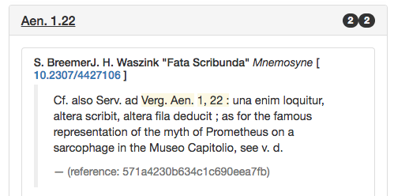
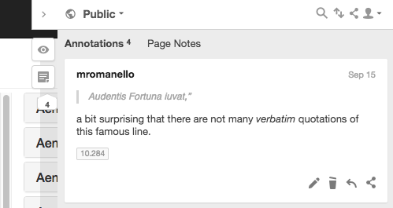

Explore

A visual index provides an overview of quotations and references, where each cell represents a chunk of the text. The darker a given cell is, the higher is the density of quotations and references within that chunk.
Read
Donec id elit non mi porta gravida at eget metus. Fusce dapibus, tellus ac cursus commodo, tortor mauris condimentum nibh, ut fermentum massa justo sit amet risus. Etiam porta sem malesuada magna mollis euismod. Donec sed odio dui.
Annotate
Thanks to the integration with the platform hypothes.is it is possible to annotate the visualisation (either privately or publicly). This way, you can take notes while you discover new articles related to the Aeneid.